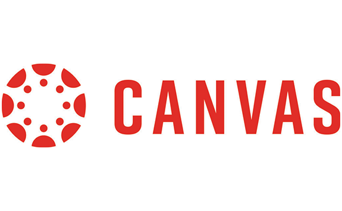

Wat is canvas?
Canvas is gebouwd om lesgeven en leren eenvoudiger te maken voor iedereen.
Het is een gebruiksvriendelijk, compleet leermanagementsysteem dat docenten en
studenten ondersteunt bij het lesgeven en leren. Canvas kan ervoor zorgen dat zowel
ace-to-face als afstandsonderwijs digitaal optimaal wordt ondersteund.
Je kunt hierbij denken aan het vinden van het digitale leermateriaal, samenwerken
met de docenten en medestudenten op afstand, opdrachten inleveren, feedback krijgen
van je docent of het inzetten van een quizmodule om kennis te activeren en testen of
je de uitleg hebt begrepen.
Canvas apps stellen je in de gelegenheid zelf een app-interface samen
te stellen naar eigen wens en kunnen verbinding maken met maar liefst
200 gegevensbronnen naar keuze. Canvas Apps zijn beschikbaar voor
web, mobile en data.
Canvas App voor Schoolroosters en Interactie:
Onze Canvas App voor studenten biedt een krachtig hulpmiddel voor het beheren van schoolwerk,het faciliteren van communicatie tussen studenten en docenten, en het betrekken van ouders
bij het leerproces. Hier is een overzicht van de belangrijkste functies:
Huiswerk- en Cijferbeheer:
Onze app stelt studenten in staat om hun toegewezen huiswerk moeiteloos
te raadplegen. Ze kunnen zien welke taken er zijn, de deadlines en inleveringstijden,
en zelfs controleren hoe ze presteren. Het totaal aantal punten voor al hun huiswerk wordt
overzichtelijk weergegeven, zodat ze hun academische voortgang in één oogopslag kunnen volgen.
